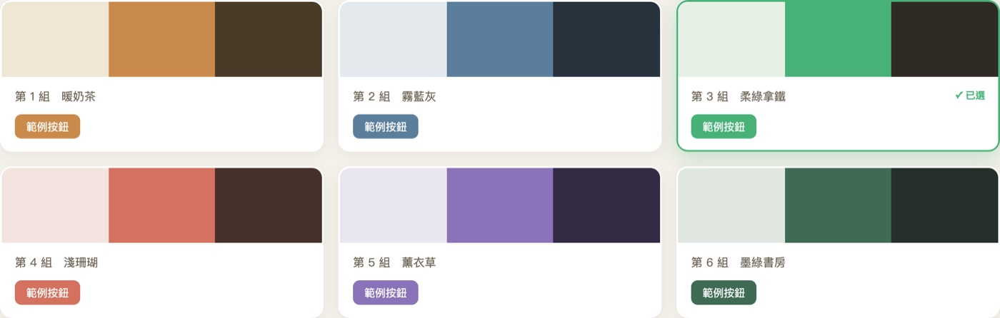
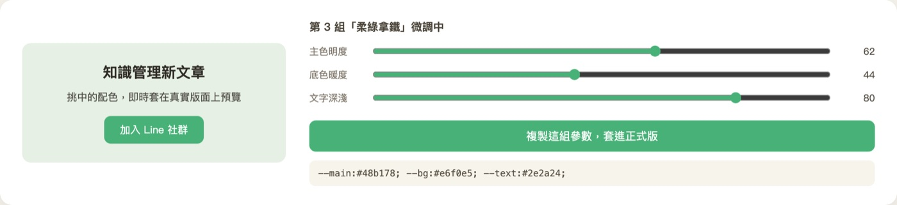

發佈 2026-06-30 | 最後更新 2026-06-30
跟 AI 一起做網頁、做圖、調樣式，最耗時間的常常是配色這關。它配一個、你說不對、它再配一個，來回好幾輪，又慢又燒額度。我後來換了一個做法：與其讓 AI 一次次猜，不如請它一次配好六組擺在一起，我直接挑。挑中再當場微調，定稿一鍵複製。這篇把這個工作法講清楚，附我自己做的範例。
會用 AI 做網頁、圖卡、簡報，卡在配色來回試的人；想跟 AI 協作更有效率、少燒一點額度的人；一人公司、個人創作者，自己當自己的設計師。
一個可以馬上用的協作口令（先配六組，再點選微調）；一個容易踩的坑提醒（改主色要連子元素一起調）；一個能套到配色以外的通用思路。
最耗時的那關：來回猜
我們跟 AI 調樣式的時候，最常見的流程是這樣：我們說「幫我配個溫暖一點的顏色」，它給一組，我們覺得太暗，它再給一組，又太花，再描述一次，一來一回五六次，時間花掉了，額度也燒掉了，最後那組還不一定是最想要的。
問題出在一次只給一組。你每次只能看到一個選項，沒有比較的基準，只能靠形容詞來回修，AI 也只能猜你腦中那個說不清楚的畫面。
換個口令：一次配六組，我直接挑
後來我把口令換掉。不再說「配一個顏色」，改成請它一次配六組不同方向的配色，每組都套在同一個版面上並排給我看，我直接挑。
你可以直接照抄這句口令：
差別很大。六組一起擺出來，一眼就能比較，馬上知道自己偏好哪個方向。挑選比描述容易太多了，不用再費力把感覺翻譯成形容詞，看到順眼的指一下就好。

像上面這樣，暖奶茶、霧藍灰、柔綠拿鐵、淺珊瑚六個方向並排。每張卡都直接把主色套在一個範例按鈕上，連顏色實際用起來的樣子都看得到，比單看一塊色票好判斷。
動手玩玩看：拉一下，這塊就變色
下面這個小區塊就是一個迷你網頁。點上面的色卡換方向，或拉三條滑桿微調，右邊的示範卡會即時跟著變色，下面也會即時給你可以複製的 CSS 變數。這就是把「讓 AI 一直猜」換成「自己拉到滿意」的感覺。
知識管理新文章
這張示範卡的配色，會跟著你左邊的調整即時改變。
加入 LINE 社群想自己拿來用？這套方法我整理成公開技能包「AI 網頁微調術」，裡面有配色、位置、字級、光暈四支可以直接打開用的校稿器，免費下載：GitHub · ai-web-tuner ↗。
挑中那組，當場微調
挑到接近的那組，通常還不會是百分之百滿意，可能就是覺得綠色再亮一點、底色再暖一點。這時候不用整組重來，在那組上局部調就好。

我會請 AI 把選中那組做成幾個可以微調的旋鈕：主色明度、底色暖度、文字深淺。左邊即時預覽套在真實版面上的效果，右邊拉一拉，到滿意為止。這個校稿器是我請 AI 做的小工具。如果你手邊沒有這種互動介面，也可以直接在對話裡請 AI 一次輸出三個微調版本的色碼讓你挑，一樣達到效果。
這一步的重點是：方向已經定下來，微調只是在挑中的那組上做小修，把它調到剛剛好。
定稿就一鍵複製
調到滿意，把那組參數複製起來，直接套進正式版的程式碼，或交給你的設計工具、網站製作工具使用。
就是定稿後可以直接貼走的東西。整個流程跑下來是：六組並排挑方向，挑中微調，定稿複製。三步，沒有反覆猜。
一個很容易踩的坑
換配色的時候有個地雷要提醒：改一個區塊的主色，不能只改背景。底下的文字、邊框、卡片底、按鈕，都要一起調到在新底色上讀得清楚。
這招不只能用在配色
「先給幾組，再點選微調」這個思路，套到配色以外一樣好用。版型要選、文案語氣要抓、標題要挑，任何「需要挑、會來回試」的選擇，都可以請 AI 先給你幾個並排的版本，挑一個再微調，省下一次次從零猜的來回。
說到底，跟 AI 協作的效率，很多時候差在你給它的是描述還是選擇題。描述很累，選擇很快。把來回猜變成一次挑，這個小小的姿勢調整，省下來的時間其實很可觀。
下次再跟 AI 調東西卡住的時候，試試這句：先給我六組並排的，我挑一個再微調。
想一起把 AI 用進日常工作？
我每個月辦兩場免費線上講座，也在 LINE 社群裡分享實際用 AI 做事的做法。歡迎進來一起聊。
每個月兩場免費講座，AI 應用與知識管理的實作分享。